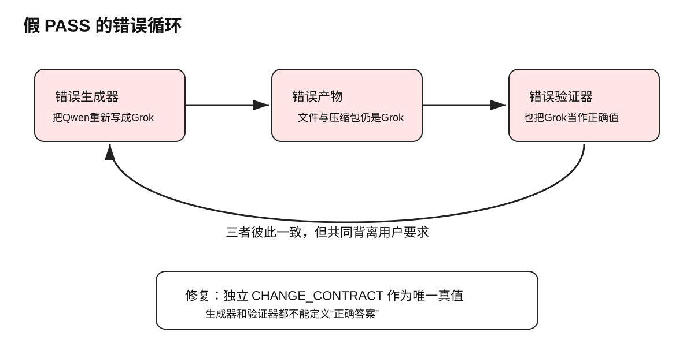
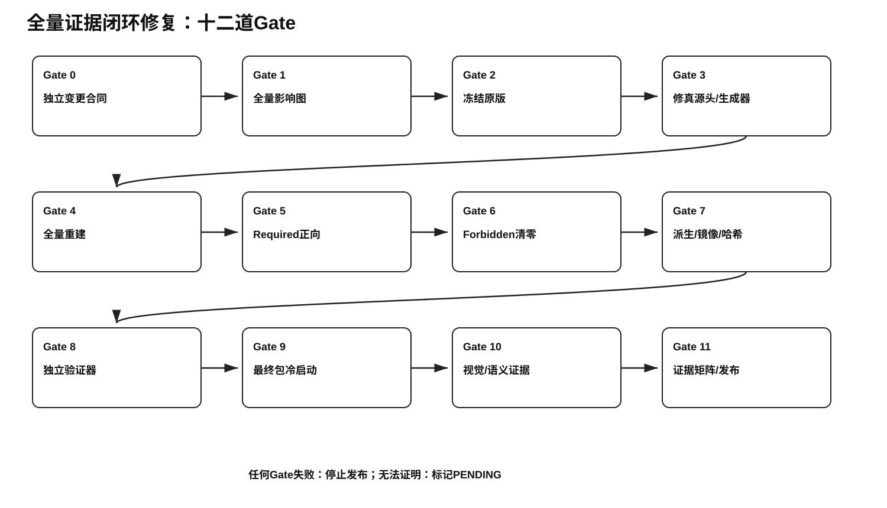
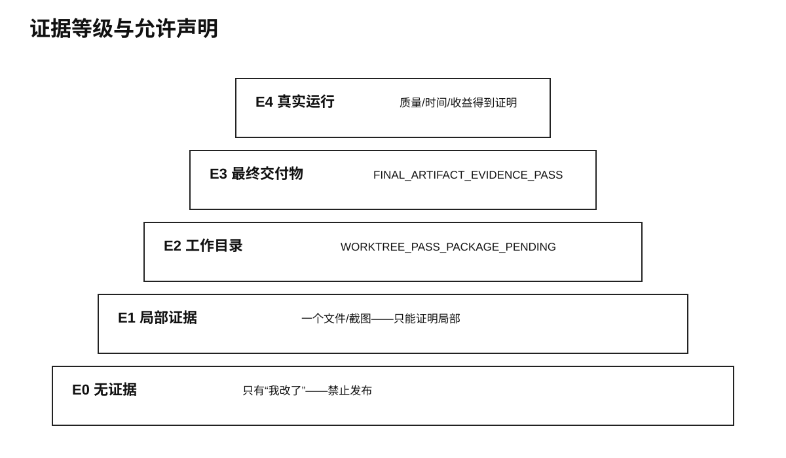

很多修复失败并不是因为“完全没有修改”，而是因为修改只发生在局部：某个源文件改对了，派生文件没同步；工作目录改对了，最终压缩包还是旧的；正确词出现了，但错误词仍散落在脚本、报告和嵌套包里；验证脚本显示PASS，但验证脚本本身使用了错误标准。
这类问题最危险的地方在于：过程看起来非常完整，报告也可能非常漂亮，但用户实际拿到的文件仍然错误。
本技能来自 UltraFusion V9.1 中一次真实、反复失败的修复：第二路模型本应是 Qwen（阿里千问），却被写成 Grok/xAI。这个修改表面只是一处模型名纠正，实际牵涉源提示词、装配命令、稳定母版、生成器、验证器、报告、网页、截图、独立压缩包和最终压缩包。
用户的核心判断非常准确：
没有列出足够证据证明确实改进了、确实做到了，就相当于没有做到。
因此，本技能把“完成”的定义从主观声明改成可审计的证据合同。
用户最初要求同时完成四件事：
所以正确任务类型是：
跨源头、派生链、构建系统、验证系统和最终交付物的全局一致性修复用户明确：
错误：GPT / Grok / DeepSeek
正确：GPT / Qwen（阿里千问） / DeepSeek并明确A层本身不需要固定模型，但B、C和后续继承位置必须同步。
当时的错误理解是把任务缩小成“改03、04中的几个标签”。
第一次宣布完成后，用户亲自下载、解压，发现Grok仍在。用户要求：
不要不检查就说改了；弄完以后反复检查几遍。这一步暴露出：验收对象错了。检查的是中间工作目录或局部文件，而用户使用的是最终压缩包。
后续虽然增加了“多轮扫描”“残留为0”等声明，用户再次下载仍看见Grok。
直接对最终ZIP和7z做法证解压后，当时记录到：
Grok/xAI相关残留：99处并发现更深的根因：
这不是“没有运行验证”，而是“验证了错误真值”。
即使03、04局部修改，07、08、09等装配文件和1号母版仍可能保留旧值。
这说明：
源文件正确 ≠ 派生文件正确必须建立明确派生关系：
06 = 01 + 02
07 = 01 + 03
08 = 01 + 04
09 = 01 + 05修改源后必须重新装配，而不是相信已有派生文件会自动同步。
用户最终明确：
不只是06—09，所有有可能存在的地方都要检查；
因为已经错了好几次，不能信任以前的检查结果；
要把它当成一套全新文件重新验收。这一步把验收范围扩展到：
这才形成真正闭环。
把系统性修改理解为局部字符串替换，没有先画影响图。
手工修改派生文件只能暂时正确。只要生成器再运行，错误就会复发。
生成器仍包含错误映射，导致“修好—重建—再次变错”。
验证器从生成器读取同一替换表。两个程序可以彼此一致，却同时背离用户要求。
看到Qwen出现便认为完成，却没有证明Grok、xAI、格洛克和旧槽位全部为0。
工作目录PASS不代表用户下载的ZIP/7z PASS。压缩动作可能取了旧目录、旧缓存或旧嵌套包。
外层包正确，内部0号/1号独立压缩包仍可能是旧版。
浏览器缓存、旧下载、旧解压目录和新文件同名，用户无法确认打开的是哪一版。
先把用户要求写成机器可读合同。以合同为真值，不以构建脚本为真值。
示例：
{
"required": [{"pattern": "Qwen（阿里千问）", "min_count": 1}],
"forbidden": [
{"pattern": "Grok", "max_count": 0, "case_sensitive": false},
{"pattern": "xAI", "max_count": 0, "case_sensitive": false},
{"pattern": "格洛克", "max_count": 0}
]
}不是只记录“要改的文件”，还记录：
修正源提示词和生成器后，重新装配全部派生文件，再同步母版和旁路产物。
Required = 100%
Forbidden = 0只有两个条件同时成立才通过。
验证器必须能够：
坏样本如果也通过，说明验证器无效。
重新生成压缩包后，在全新临时目录解压，不使用旧工作目录和缓存，再跑完整合同。
外层ZIP/7z和内部嵌套包都要验证。无法检查的格式必须写PENDING。
每个PASS必须绑定可复核证据：文件路径、行号、计数、哈希、字节比较、截图或日志。
截图能够证明：
截图不能证明：
所以完整证据组合是：
机器递归扫描
+ 正向/负向计数
+ 哈希与字节比较
+ 最终包冷启动
+ 截图
+ 语义分析即使所有Grok都被改成Qwen，系统仍可能“字面正确、功能无效”。
D层必须满足：
这些内容不能通过关键词扫描完全证明，需要人工或模型语义审查。静态规则通过后，真实执行效果仍标记：
RUNTIME_VALIDATION_PENDING只有“我改了”“应该好了”。禁止发布。
展示一两个文件或截图。只能证明局部。
工作目录全量机器检查通过，但最终包未验证：
WORKTREE_PASS_PACKAGE_PENDING最终ZIP/7z冷启动、递归扫描、哈希、镜像和截图全部通过：
FINAL_ARTIFACT_EVIDENCE_PASS真实模型、真实输入、真实操作端到端运行。只有E4才能证明答案质量、真实时间和商业收益。
中文名称：全量证据闭环修复
要解决的问题：假完成、局部完成、派生不同步和最终包仍旧
预计收益：错误残留归零；派生一致率100%；减少多次返工、下载和信任损失
预计成本：小型任务增加5—20分钟；复杂包增加20—60分钟
量化指标：Forbidden=0；Required=100%；镜像字节一致=100%；锁定哈希不变；冷启动包验证=100%
收益成本判断：一旦发生两次返工，完整闭环成本显著低于继续试错成本
是否执行：满足触发条件时强制执行不验证“做事过程看起来是否完成”，只验证用户最终拿到的文件是否被独立证据证明正确。
一个PASS必须同时回答：正确内容在哪里？错误内容是否为0？最终下载包是否重新解压验证？
验证器与生成器一致，不等于它们与用户要求一致。
无法证明的事项不是“可能完成”，而是 `PENDING`。
